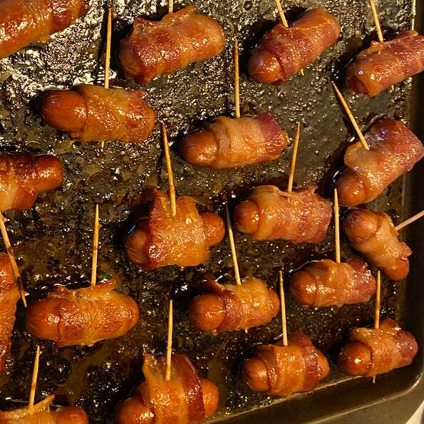

Bacon Wrapped Smokies

These bacon wrapped smokies are a salty side that the whole family is sure to love!
Quick, easy and delicious! Bacon wrapped smokies are a staple at any good tailgate! This is the bestrecipe for them, hands down!
Ingredients
- 1 pound sliced bacon, cut into thirds
- 1 (14 ounce) package beef cocktail wieners
- 3/4 cup brown sugar, or to taste
Steps
- Preheat the oven to 325 degrees F (165 degrees C).
- Refrigerate 2/3 of the bacon until needed. It is easier to wrap the wieners with cold bacon. Wrap each cocktail wiener with a piece of bacon and secure with a toothpick. Place on a large baking sheet. Sprinkle brown sugar generously over all.
- Bake for 40 minutes in the preheated oven, until the sugar is bubbly. To serve, place the wieners in a slow cooker and keep on the low setting.